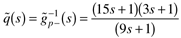

| [ Team LiB ] |
|
8.8 The IMC Design ProcedureThe IMC design procedure for SISO systems is identical to the design procedure that we developed for open-loop controller design earlier. The assumption we are making is that the model is perfect, so the relationship between the output, y, and the setpoint, r, is given by Equation (8.1). Model uncertainty is handled by adjusting the "filter factor" for robustness (tolerance of model uncertainty) and speed of response. The IMC design procedure consists of the following four steps.
The student should note that the factorization performed in Equation (8.39) is used only for controller design. The process model that is simulated in parallel with the process is still the full model, . If the process model is perfect, then we can easily calculate what the output response to a setpoint change will be. Substituting Equation (8.40) into Equation (8.38), we find If the model is perfect, then and we can substitute Equation (8.44) into Equation (8.43) to find which yields Equation (8.46) indicates that the bad stuff must appear in the output response. That is, if the open-loop process has a RHP zero (inverse response), then the closed-loop system must exhibit inverse response. Also, if the process has dead time, then dead time must appear in the closed-loop response. Please remember that Equation (8.46) only holds for the case of a perfect model. The most common process model is a first-order plus time-delay transfer function. The design procedure for this system is shown in the next example. Example 8.5: First-Order + Dead Time ProcessConsider a first-order + time-delay model: Using the four-step design procedure, first factor out the noninvertible elements, Then form the idealized IMC controller, and add a filter to make the controller proper Once again, the controller is of lead-lag form. Finally, adjust l for response speed and robustness. The closed-loop response (assuming a perfect model) to a setpoint change is For a step setpoint change of magnitude R, Numerical ExampleConsider a first-order + time-delay process with a time constant of 10 seconds, a time delay of 5 seconds, and a gain of 1%/%. The output and manipulated variable responses for various values of l are shown in Figure 8-14. Figure 8-14. Response as a function of l for IMC of a first-order + time-delay process.Notice that the IMC procedure has effectively "compensated" for the time delay. The time delay was not removed, but the controller does not "expect" results from a manipulated variable move until "after" the time delay because the model is integrated "in-parallel" with the process. Example 8.6: Second-Order with an RHP ZeroConsider the following transfer function, which has an RHP zero at 1/9 min-1: Using all-pass factorization of the model, we find Forming the idealized controller,  Add the filter to make the controller semiproper: For a perfect model, the output response is and the manipulated variable response is The output and manipulated responses for a step setpoint change is shown in Figure 8-15 as a function of l. Notice that as l is decreased, the inverse response becomes more pronounced—the inverse response can not be removed by a stable controller. Figure 8-15. Input and output response as a function of l when all-pass filter is used.It should be noted that the initial-value theorem can be used to determine the manipulated variable action that occurs immediately after a step setpoint change. We have shown how to factor models with time delays and RHP zeros and have used several examples to illustrate the effect of the tuning parameter (or filter time constant), l, on the output response to setpoint changes if the model is perfect. The IMC design procedure is identical to the open-loop control design procedure presented in Section 8.3. Although the control-system design procedure is the same, the implementation of IMC is much different, since it incorporates feedback to compensate for model uncertainty or disturbances. |
| [ Team LiB ] |
|